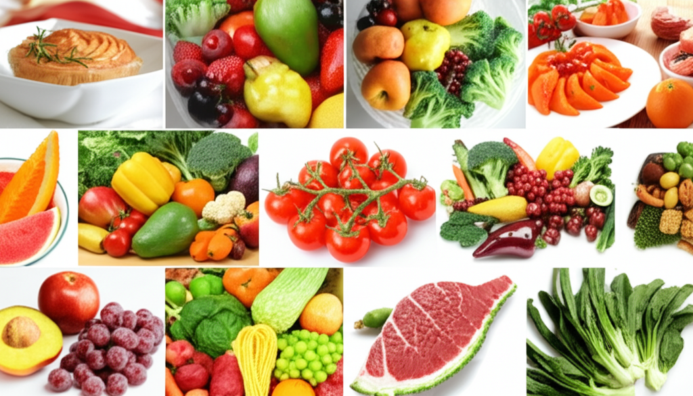

# 體重管理與健康新趨勢：從黃金配方到飲食控制
## 引言
近年來，隨著健康意識抬頭，體重管理不再只是追求數字上的降低，更趨向於精準、科學的方式。從保健食品的黃金配方，到飲食習慣的調整，以及運動的配合，人們開始關注更全面的健康管理策略。本文將探討當前體重管理與健康相關的趨勢，分析相關資訊，並提供實用的建議。
## 主體內容
### 第一點：精準健康與保健食品的黃金配方
「速速孅型」等保健食品的推出，代表了體重管理領域的一大趨勢：精準健康。這些產品不再是單純的抑制食慾或促進代謝，而是通過科學配比的成分，針對不同體質和需求提供客製化的解決方案。這種「黃金配方」概念強調成分之間的協同作用，以達到更佳的效果。廠商開始強調科研基礎，以科學和專業作為品牌基底，讓消費者在體重管理方面不再盲目。例如，星譜生技的「比例學院」即以此為出發點。
### 第二點：飲食控制與健康飲食習慣
除了保健食品，飲食控制仍然是體重管理的重要一環。澎湖冰花的爆紅，反映了人們對低熱量、高營養價值食物的追求。冰花不僅熱量極低，富含水分，還被譽為「蔬菜界LV」，顯示健康飲食也能兼顧美味與生活品質。此外，關節健康也與體重控制息息相關。「軟硬兼顧」飲食法強調通過補充EPA和DHA等營養素，降低發炎反應，配合適宜的運動，維持肌肉和關節的健康。這提醒我們，體重管理不應忽略身體其他方面的需求。大學開設“體重管理”課程，也顯示了對於健康飲食和體重管理的重視。
### 第三點：運動與生活習慣的調整
陳念琴等運動員的訓練情況，也反映了體重控制對於競技表現的重要性。體重控制影響運動員的腳步、速度和力量，需要不斷適應和調整。而台灣白領女性酒精成癮問題的增加，則警示我們，壓力管理和生活習慣的調整，對於維持健康體重和整體健康至關重要。
## 結論
體重管理已成為一項綜合性的健康管理工程，不再是單一手段就能奏效。從選擇具有科學依據的保健食品，到調整飲食習慣，再到適度運動和管理壓力，都需要我們採取全面的策略。追求健康體重的同時，更要關注身體的整體健康，才能真正實現「精準健康」的目標。